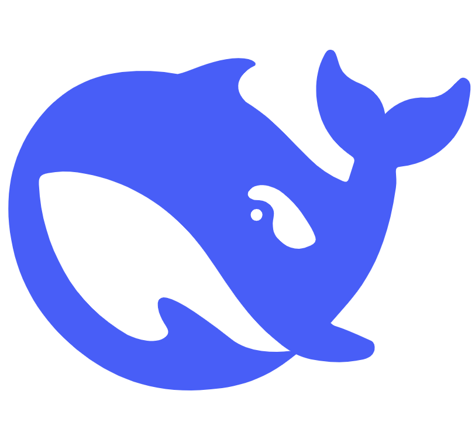
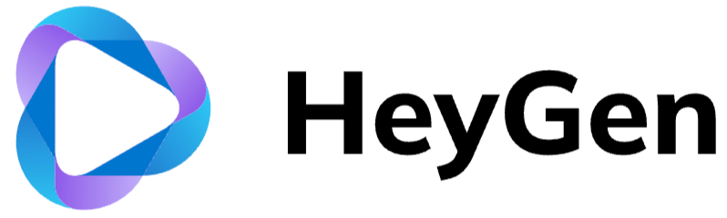

Gigachat
Gigachat — это мощная нейронная сеть для обработки естественного языка.

Deepseek
Deepseek — нейронная сеть для анализа данных и поиска закономерностей.

Heygen
Heygen — нейронная сеть для генерации контента и творческих задач.
GigaChat — сервис на основе искусственного интеллекта, способный общаться с пользователями в режиме диалога, генерировать по запросу тексты и изображения и писать программный код и создании музыки. Данный чат-бот разработан Сбером и поддерживает русский и английский языки. GigaChat использует генеративный искусственный интеллект на базе больших языковых моделей.
GigaChat функционирует в формате чат-бота на официальном веб-сайте, в Telegram и ВКонтакте, на колонках SberBoom, SberBoom Mini 2, в мобильном приложении «Салют» на Android.
DeepSeek — это нейросеть, специально разработанная для программистов. Она помогает в написании кода и отвечает на вопросы, связанные с программированием.
DeepSeek состоит из двух инструментов:
Deepseek Chat — инструмент для поиска информации о программировании. Он может предоставить информацию об определённой библиотеке или решении.
Deepseek Coder — нейросеть для написания кода, которая часто приводит примеры кода в своих ответах.
Оба инструмента находятся в стадии альфа-тестирования и доступны для бесплатного использования после регистрации на сайте deepseek.com.
HeyGen — это нейросеть, с помощью которой можно генерировать видеоролики, озвучивать их, дублировать на разные языки и создавать виртуальных дикторов, которые зачитывают текст. Главная фишка нейросети в том, что во время создания дубляжа она адаптирует движение губ человека под новую аудиодорожку и имитирует тембр голоса из оригинального ролика.